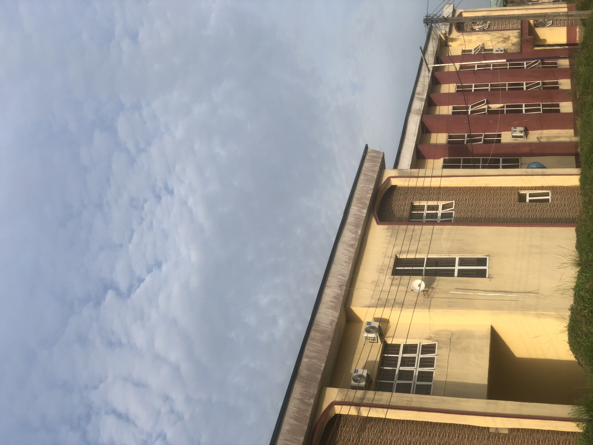
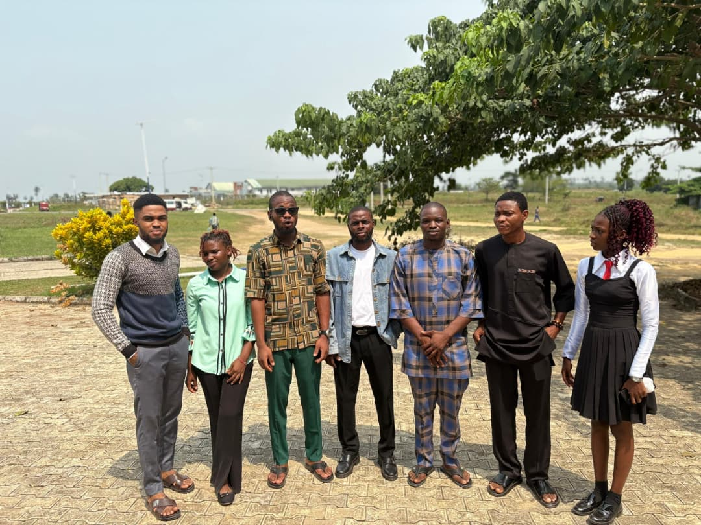
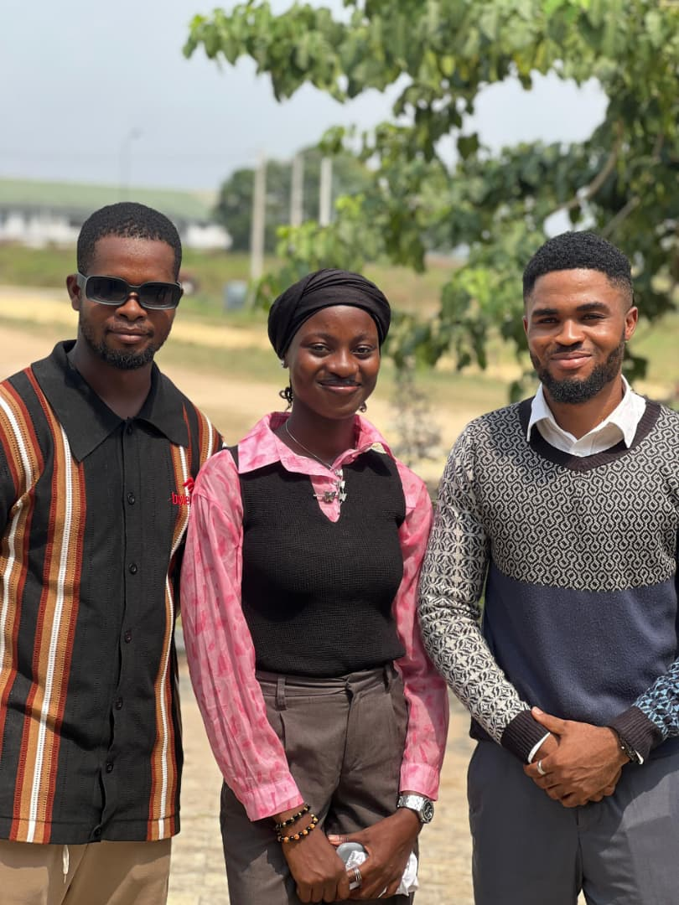
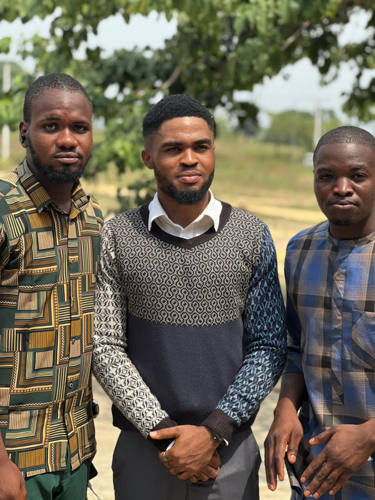

Department of Data Science
University of Uyo
To produce graduates equipped with the analytical, statistical, and computational skills to harness data for innovation, research, and sustainable development across Nigeria and beyond.
The Department of Data Science at the University of Uyo offers a Bachelor of Science (Honours) degree, training students in statistics, machine learning, big data, and computational sciences across a four-year programme.
Our curriculum blends theory with hands-on practice, from Fundamentals of Data Science in year one through to Final Year Projects, Cloud Application Development, and Intelligent Computing for Urban Centres in the final year.

A four-year honours degree covering statistics, machine learning, big data, and visualization.
Engage in cutting edge research projects with faculty mentorship.
SIWES placement and industry-aligned curriculum prepare graduates from day one.
Cloud computing, intelligent systems, and data warehousing in the final year.
Connections supporting internships and direct graduate placement.
Data Engineering, Business Analytics, Machine Learning, Big Data, and more.




"The Department of Data Science is committed to producing graduates who are not only technically sound but also equipped with the analytical mindset to solve real problems facing Nigeria and the world."
The University of Uyo was established when the Federal Government took over the defunct University of Cross River State, Uyo.
The 128th Senate Meeting approved the unbundling of Computer Science into five new departments including Data Science on October 4, 2023.
Dr. Samuel S. Udoh was appointed as the pioneer Head of Department on December 7, 2023.
The pioneer set of B.Sc. Data Science students registered and began their academic journey at UNIUYO.
Dr. Uduak D. George became Head of Department, continuing the mission of academic excellence.
200+ students enrolled, growing curriculum, and a bright future ahead for Data Science at UNIUYO.
Apply through JAMB using the UTME. You need five O Level credit passes including English Language, Mathematics, and Physics, plus two other science subjects. You must also sit the post-UTME screening test. UTME subjects: English, Mathematics, Physics, and Chemistry.
SIWES stands for Students Industrial Work Experience Scheme. It is a four-month industrial training programme in 300 Level Second Semester. Every student must complete it in a Data-oriented or computer related industry or establishment.
Graduates can work in Data Engineering, Data Mining, Business Analytics, Machine Learning, Data Visualization, Big Data Analytics, and Managerial Data Science in banking, healthcare, government, tech companies, or as an independent consultant.
Click Student Portal in the navigation or quick links. Register using your official university registration number and set a password. Once registered, log in anytime to access course materials and your full course structure.
Yes. Direct Entry candidates can qualify with two A Level passes in science subjects including Mathematics, an NCE with merit pass in Mathematics, a Diploma in Data Processing, or an ND/HND lower credit in relevant fields with NCE merit pass in Mathematics, Statistics, or Computer Science.
The Department of Data Science sits within the Faculty of Computing at the University of Uyo. The Faculty houses five departments: Computer Science, Cyber Security, Data Science, Information Systems, and Software Engineering, all unbundled in October 2023 to reflect the growing importance of computing disciplines in modern society.
Read Our HistoryExplore our programme requirements and find out how to apply.
View Admission Requirements